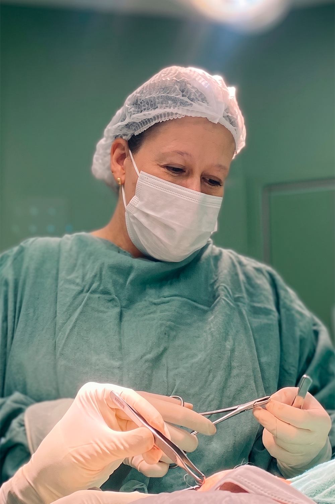

Atendimento especializado em cirurgia plástica, unindo técnica apurada, resultados naturais e segurança. Um cuidado pensado para a sua individualidade.
Procedimentos com foco no bem-estar, contorno corporal e harmonia estética.
Mastopexia com ou sem próteses de silicone, mamoplastia de aumento, mamoplastia redutora e reconstrução mamária.
Lipoaspiração, lipoescultura, lipoenxertia glútea, e tecnologias avançadas de retração de pele como Argoplasma e Laser.
Remodelagem abdominal com técnicas convencionais, mini-abdominoplastia, incisão em âncora ou reversa, restaurando a firmeza.
Cirurgia das pálpebras para remoção do excesso de pele e bolsas de gordura, rejuvenescendo e iluminando o seu olhar.

Um atendimento moldado para você, onde a excelência técnica se encontra com a empatia.
Decidido junto com a paciente, considerando suas necessidades, desejos e expectativas. A paciente é ouvida para elaborarmos a melhor indicação de tratamento com máxima segurança e altíssima capacidade técnica.
Sabemos da importância da liberdade para usar um decote sem se preocupar. Portanto, dentro da individualidade de cada caso, realizamos cicatrizes reduzidas na mastopexia, proporcionando mais confiança e liberdade.
Acompanhamento de perto no pré, intra e pós-operatório. A paciente tem liberdade para tirar todas as dúvidas e se sente acolhida em qualquer etapa do seu processo de transformação.

Com formação sólida em Cirurgia Plástica e dedicação contínua à atualização técnica, a Dra. Rafaela foca em entregar resultados harmoniosos e seguros.
Seu principal objetivo é promover a melhoria da autoestima através de procedimentos modernos, minimamente invasivos e sempre respeitando as características únicas de cada paciente.
Entre em contato e agende a sua avaliação. Será um prazer receber você no nosso consultório.
Conversar pelo WhatsAppA consulta inicial é o momento mais importante do seu processo. Nela, a Dra. Rafaela Campos avalia a sua saúde geral, compreende as suas expectativas estética e reconstrutiva, analisa a sua anatomia e planeja as melhores opções cirúrgicas. É o espaço perfeito para esclarecer dúvidas e receber todas as orientações sobre segurança, exames pré-operatórios e o planejamento sob medida para você.
Sim, é perfeitamente possível e muito comum realizar cirurgias combinadas, como a famosa abdominoplastia com mastopexia (muito comum no momento pós-gestação, conhecido como "Mommy Makeover"). No entanto, a associação depende do tempo cirúrgico total estimado, das condições gerais de saúde da paciente e, acima de tudo, de rigorosos critérios de segurança avaliados na consulta médica.
Como cirurgiã plástica, a Dra. Rafaela sempre posiciona as cicatrizes em dobras naturais da pele, marcas de expressão ou em locais facilmente cobertos por roupas íntimas e de banho (como no biquíni). Além disso, oferecemos um protocolo completo de tratamento pós-operatório para a cicatrização, com indicação de pomadas específicas, fitas de silicone, hidratação profunda e proteção solar estrita, garantindo resultados discretos e maduros.
O tempo varia para cada procedimento. Atividades cotidianas leves e trabalho administrativo costumam ser liberados entre 10 e 15 dias. Quanto aos exercícios físicos, o retorno é gradativo: caminhadas leves costumam ser liberadas após 20 a 30 dias; musculação e exercícios que exijam esforço dos membros operados, ou impacto, geralmente requerem de 45 a 60 dias de repouso, sob liberação médica.
A segurança é nosso pilar inegociável. No pré-operatório são solicitados exames laboratoriais completos (sangue, coagulação), avaliação cardiológica (risco cirúrgico) e exames de imagem específicos (como ultrassonografia de abdômen ou mamografia, dependendo da cirurgia). Também é essencial suspender o tabagismo, o consumo de bebidas alcoólicas e o uso de alguns medicamentos que possam interferir na coagulação nas semanas que antecedem o procedimento.
Endereço:
Rua Goiás, 49 - Gonzaga
Santos / SP - CEP: 11050-100
Horário de Atendimento:
Segunda à Sexta - 08:00h às 18:00h